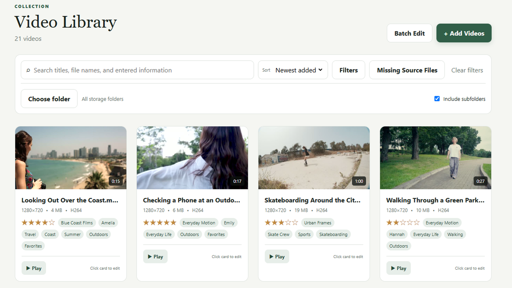
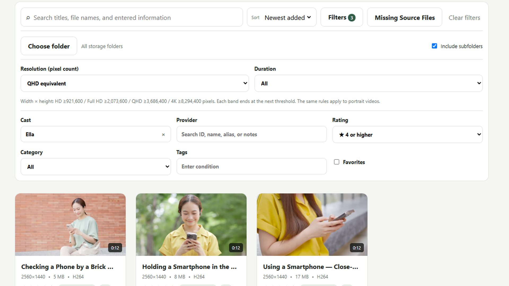

Select videos. Add them together.
Add multiple videos to your library at once. Thumbnails, duration, resolution, and other basic details are generated or read automatically, so you don’t have to enter them one by one.
Bring your PC’s video collection into one library.
Hover to preview, organize with fully customizable fields, and quickly find the video you want.

Add multiple videos to your library at once. Thumbnails, duration, resolution, and other basic details are generated or read automatically, so you don’t have to enter them one by one.
Hover over a thumbnail to play a video preview and check the content before opening it. Click Play to watch the video in your usual video player.
Register multiple aliases for each performer. When editing video details, search for performers by name, alias, or notes. Keep the same person organized under one record, even when their name appears differently.
Choose both the name and input format of each field to suit your way of organizing. Use text, numbers, dates, choices, tags, five-star ratings, checkboxes, and more.
For example, use a date field for “Filmed on,” a choice field for “Genre,” and long text for “My notes.” Add the fields you need and make the library your own.
Back up and restore your library information. Original video files are not included in library backups, so keep separate copies of those files.

Filter by performer, provider, storage folder, resolution, or duration. Include subfolders when searching within a folder.
Your videos stay in their original locations. Removing an entry from the library does not delete the original video file.
For questions about FrameCatalog or to report a problem, please email us.
orivelaworks@gmail.comPlease include your app version, Windows version, the steps that led to the problem, and any error message you saw.
Do not send passwords or payment details. If you attach a screenshot, hide any personal information or private video names.
How we handle your data{kind=link}